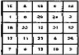

ИЗДАНИЕ 08
1. Чтобы шепотом при чтении не проговаривать слова и
мысленно не произносить их, следует плотнее сжать зубы и
повторять про себя "один, два, три и т. д.".
2. Водить глазами при чтении по странице сверху вниз, а
не слева направо.
3. Схватывать одним взглядом группу слов, а не одно или
два слова, как вы это делаете, читая в данную минуту эту
страницу.
4. Не останавливаться и не возвращаться взглядом к
пройденным кускам текста.
5. Тренировать периферическое зрение, стараясь взгля
дом охватить как можно больше слов.
6. Чаще тренироваться. Идя по улице, стараться одним
взглядом запечатлеть номера проезжающих машин, рек
ламную информацию и т. п.
7. Ежедневно тренироваться по 30-40 мин.
8. Читать без регрессии, т. е. не допускать возвратных
движений глаз.
9. Читать по принципу интегрального алгоритма (Алго
ритм - совокупность каких-либо действий или ряда конк
ретных операций с точным указанием их последовательно
сти от начала до конца; интегральным он называется пото
му, что его действие распространяется на весь текст в це
лом.) для формирования навыка чтения, предусматриваю
щего определенную последовательность рациональных
действий в соответствии с блоками алгоритма от первого
до последнего. Всего 7 блоков интегрального чтения (кни
ги, статьи): 1) автор; 2) источники его данные; 3) проблема;
4) фактографические сведения; 5) особенности излагаемого
материала; 6) критика; 7) новизна излагаемого материала
и возможности использования в практической работе.
Требуется хорошо запомнить все блоки алгоритма и не забывать их при чтении.
10. Выработать умение извлечения дифференциального
алгоритма чтения, т. е. ключевых слов - смысловых рядов
- доминанты или значения смысловой части текста.
11. Избавиться от артикуляции при чтении текста (про-
говаривание слов шепотом, мысленное произнесение слов)
и предельно сжать внутреннюю речь (она проявляется в виде
коротких залпов ключевых слов и смысловых рядов, адек
ватно отражающих смысл текста).
С этой целью предлагается для многократной тренировки упражнение "Выстукивание ритма".
Суть упражнения такова: читая какой-либо текст "про себя", вы выстукиваете рукой ритм, не соответствующий обычной ритмике русской речи.
Он представляет собой двухтактное постукивание с четырьмя ударными элементами в первом такте и двумя во втором и со значительным усилением удара на первом элементе каждого такта.
Достаточно почитать в течение 20 ч с выстукиванием ритма, чтобы созрела и окрепла новая программа работы мозга, сформировался новый стереотипный код, обеспечивающий обработку информации, поступающей в мозг по зрительному каналу, без проговаривания.
Для выстукивания ритма карандаш берут тремя пальцами правой руки и ударяют по столу - твердо, уверенно и четко. Ритм выстукивают при активном движении всей руки, а не только кисти. При чтении с одновременным выстукиванием ритма главное - обеспечить непрерывность и правильность рисунка ритма. Поначалу чтение с одновременным выстукиванием ритма проходит очень медленно и без понимания прочитанного. В течение недели рекомендуется читать так несложные тексты по 1-1,5 ч ежедневно. Все время вспоминайте ритм и выстукивайте его перед сном.
Совершенствование в скорочтении пойдет по следующей схеме:
1-я фаза тренировок (8-10 ч) - Ч = В,
2-я фаза тренировок (до 10 ч) - Ч + В = П,
3-я фаза тренировок Ч + В + П = 3,
4-я фаза тренировок (до 100 ч) - Ч + В + П + 3,
где Ч - чтение; В - выстукивание ритма; П - понимание; 3 - запоминание.
Ваша задача - добиваться того, чтобы скорость чтения с выстукиванием ритма равнялась скорости обычного чтения. Положительным итогом освоения упражнения с выстукиванием ритма считается развитие ярких наглядно-образных представлений в процессе чтения.

12. Развить периферическое зрение. Для этого используются 8 таблиц Шульте. Каждая таблица представляет собой разграфленный на 25 ячеек квадрат размером 20 х 20 см с числами от 1 до 25, вписанными в ячейки в произвольном порядке.
Остальные 7 таблиц расчерчиваются так же с той лишь разницей, что меняется расположение цифр в ячейках.
Задание - найти взглядом в таблице каждую цифру от 1 до 25 в предельно короткое время.
Правила работы с таблицами таковы. Для тренировки необходимо использовать все 8 таблиц. Перед началом работы с таблицей взгляд нужно фиксировать в ее центре, чтобы видеть таблицу целиком. При поиске цифр, следующих друг за другом, разрешается фиксация глаз только в центре таблицы; горизонтальные движения глаз запрещены.
Таблица 1.
ПРИМЕРНЫЙ ПЛАН ОСВОЕНИЯ ТЕХНИКИ БЫСТРОГО ЧТЕНИЯ
Наименование этапа
1. Ознакомление и изучение правил быстрого чтения,
освоение аутогенной тренировки
2. Чтение без регрессий
3. Интегральный алгоритм чтения
4. Дифференциальный алгоритм чтения
5. Избавление от артикуляции
6. Движение глаз при чтении
7. Усиление внимания при чтении и последующие тренировки |
Продолжительность
1. 20 дней по 1ч
2. 10 дней по 40 мин
3. 14 дней по 40 мин
4. 15 дней по 40 мин
5. 14 дней по 40 мин
6. 14 дней по 40 мин
7. 100 дней по 40 мин
|
Скорость чтения знаков в мин
1. 630
2. 800
3.1200
4. 2000
5. 1500
6. 2000
7. До 3500 |
Расстояние от таблицы до глаз должно быть таким же, как и при чтении обычного текста, т. е. примерно 25-30 см.
Находить цифры нужно беззвучным счетом (т. е. про себя) в возрастающем порядке от 1 до 25 (или в другом, определенном порядке). Найденные цифры указываются только взглядом (для этого таблицу держат обеими руками в слегка наклонном положении). В результате тренировки на счи-' тывание одной таблицы должно затрачиваться 25 с и менее.
13. Научиться читать при движении глаз по вертикали: фиксировать взгляд на ключевых словах и смысловых рядах.
Весьма эффективным в освоении скорочтения является упражнение "Метод штурма".
В основе упражнения - создание стрессовой ситуации, когда на чтение одной книжной страницы отводится всего 15 с. За это время вы должны действительно прочитать, а не просмотреть ("не пробежать глазами") текст.
Правила выполнения упражнения таковы. Подготовьте 10-12 книг форматом 60x84 1/16, объемом 50-100 страниц каждая. В первых двух-трех книгах предварительно сделайте разметку: простым карандашом проведите едва заметные линии сверху вниз по центру каждой страницы. Время, затрачиваемое на прочтение каждой страницы (15 с), фиксируйте по секундомеру. Можно обойтись и без секундомера: прочтите 100 страниц за 25 мин. Главное при таком чтении - строго вертикальное движение глаз по центру страницы с полным охватом всего поля текста.
Перед каждым целевым самовнушением нужно выполнить из системы AT три основных упражнения по "входу" в состояние погружения.
В табл. 2 приведены формулы самовнушения, рекомендуемые при освоении техники быстрого чтения.
Все занятия и тренировки по освоению техники быстрого чтения желательно проводить в одно и то же время. Рабочее место должно быть хорошо и ровно освещено. На столе ничего лишнего. Настоятельно рекомендуется читать большую часть времени в положении стоя, размещая книгу на наклонной поверхности типа бюро или конторки.
При чтении время от времени желательно делать перерывы, давая отдых глазам.
В течение первого года рекомендуется проводить по одной тренировке в месяц продолжительностью в одну неделю по 1-2 ч ежедневно.
Комплекс упражнений на неделю
Первые два дня по 1-1,5ч читать различные тексты с одновременным выстукиванием ритма.
По окончании чтения отдельных текстов изложить содержание прочитанного, сформировав блоки интегрального алгоритма чтения и доминанту.
Вторые два дня по 25-30 мин работать с таблицами Шуль-те. Прочитывать ежедневно по 1 -2 книги "методом штурма".
Заключительные два дня выполнять упражнения для тренировки внимания.
ФОРМУЛЫ САМОВНУШЕНИЯ ПРИ ОСВОЕНИИ ТЕХНИКИ БЫСТРОГО ЧТЕНИЯ
Наименование этапа
- 1. Чтение без регрессий
- 2. Интегральный алгоритм
- 3. Дифференциальный алгоритм чтения
- 4. Избавление от артикуляции
- 5. Движение глаз при чтении
- 6. При дальнейших тренировках
Формулы самовнушения
- 1. "Мне легко читать быстро. Я справляюсь. Я читаю без регрессий"
- 2. "Мне легко читать быстро. Я справляюсь. Постоянно помню 7 блоков
интегрального алгоритма чтения. Вижу свой зрительный образ
алгоритма" (повторить содержание всех 7 блоков алгоритма)
- 3. "Я читаю быстро. Сразу нахожу в тексте его доминанту. Излагаю ее
своими словами."
- 4. "Я читаю быстро. У меня нет артикуляции. Я запомнил ритм для ее
подавления. Я буду помнить его всегда" (простучать ритм)
- 5. "Я читаю все быстрее и быстрее. Поле моего зрения постоянно
расширяется. Я вижу всю страницу, весь текст сразу".
"Я читаю быстро. Глаза легко и свободно скользят по тексту только
вертикально. Мне очень приятно так читать"
- 6. "Я читаю удивительно быстро. Я всегда внимателен. Сосредоточен.
Мое внимание подчиняется мне"
"Я читаю удивительно быстро. У меня отличная память. Все нужное
запоминается само собой без всяких усилий".
"Я умею быстро читать. Я буду быстро читать всегда. Постоянно помню
все правила быстрого чтения" (повторить все правила) (их остановка) и частично горизонтальные движения - допустимы, но только в местах с наибольшей информационной плотностью.
Полностью понимать и усваивать прочитанное при таком чтении от вас пока не требуется.
Каждую из подобранных книг читайте от начала до конца без перерыва. По окончании чтения в письменном виде укажите, каковы наиболее интересные события, факты, явления вам запомнились.
"Методом штурма" рекомендуется прочитывать ежедневно по одной книге объемом 50-100 страниц.
В освоении техники быстрого чтения вам поможет примерный план, представленный в табл. 1.
В завершающий седьмой день рекомендуется для проверки результативности занятий прочитать 6 газет, 3 научно-популярных журнала и 150-300 страниц любого текста (тройная ежедневная норма). Эффективность выполнения данного задания и будет свидетельствовать об успешности ваших тренировок.
В начале тренировок вы будете улавливать содержание текстов. Однако через 6-8 месяцев упорных тренировок скорость чтения возрастет в 2,5-3 раза и эффективность восприятия текста будет примерно такой же, как и при обычном чтении. Желательно фиксировать, за какое время вы прочитываете 2-3 страницы, и в конце каждого месяца сравнивать результаты.
Уникальные издания.